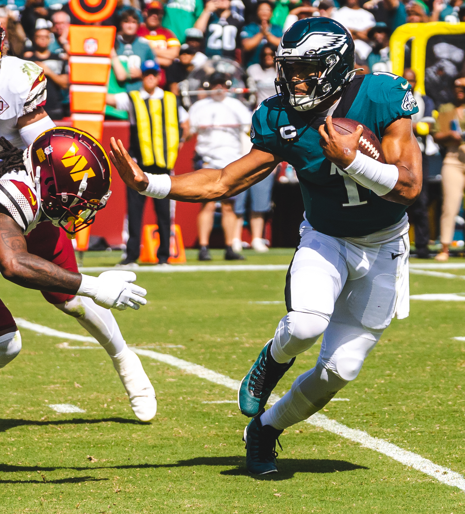

Two Championships, Seven Years Apart, Two Different Eagles Teams
The Philadelphia Eagles reached the top of the NFL twice within
seven seasons, winning Super Bowl LII after the 2017 season and
Super Bowl LIX after the 2024 season. Although both championship
teams finished with nearly identical regular-season point
differentials, the numbers reveal two different offensive
identities. The 2017 Eagles produced more passing yards and passing
touchdowns, while the 2024 Eagles generated a much stronger rushing
attack. Comparing scoring, passing, and rushing statistics from both
seasons shows how Philadelphia reached a similar championship result
with a different balance on offense.
Central Question
Did the Philadelphia Eagles' 2017 and 2024 Super Bowl
championship teams win in the same way?
Claim
The Eagles' two Super Bowl championship teams produced nearly
identical regular-season point differentials, but their offensive
profiles differed significantly: the 2017 team relied more
heavily on passing production, while the 2024 team generated
substantially more production through its rushing attack.
Two Championship Quarterbacks
Different Leaders, Same Destination
Nick Foles became the face of Philadelphia's 2017 championship
run, while Jalen Hurts led the Eagles offense during the team's
return to the top after the 2024 season.
Nick Foles and the 2017 Eagles
Nick Foles appears during the Philadelphia Eagles' Super Bowl LII
victory parade after the team defeated the New England Patriots 41–33.
Photo by Governor Tom Wolf, licensed under CC BY 2.0,
via Wikimedia Commons.

Jalen Hurts and the 2024 Eagles
Jalen Hurts represents the quarterback leadership of the Eagles team
that completed the 2024 season by defeating the Kansas City Chiefs
40–22 in Super Bowl LIX.
Photo by All-Pro Reels, licensed under CC BY-SA 2.0,
via Wikimedia Commons.
Regular-Season Comparison
What Changed Between the Two Championship Teams?
Philadelphia's overall scoring margin barely changed between the
two championship seasons. The way the Eagles generated offensive
production, however, changed considerably.
Regular-Season Comparison of the 2017 and 2024 Philadelphia
Eagles
The championship teams reached similar overall results while
producing offense in noticeably different ways.
The 2017 Eagles produced more passing yards and passing
touchdowns, while the 2024 Eagles produced considerably more
rushing yards and rushing touchdowns. Yardage and touchdown
sections use separate visual scales because they represent
different units.
Nick Foles image:
Photo by Governor Tom Wolf during the Philadelphia Eagles
Super Bowl LII Victory Parade, February 8, 2018.
Licensed under
CC BY 2.0
.
Source:
Wikimedia Commons
.
Jalen Hurts image:
Photo by All-Pro Reels of Jalen Hurts playing for the
Philadelphia Eagles. Licensed under
CC BY-SA 2.0
.
Source:
Wikimedia Commons
.
Data Transformation Note
Statistical values for the 2017 and 2024 seasons were transcribed
from the cited team-statistics sources. Values in the Difference
column were calculated by subtracting each 2017 value from the
corresponding 2024 value. No source values were otherwise altered.
Because the NFL regular season expanded from 16 games in 2017 to
17 games in 2024, raw season totals are presented with that
limitation disclosed.
Testing Record
HTML validation: Completed.
CSS validation: Completed.
320-pixel viewport test: Completed.
768-pixel viewport test: Completed.
1280-pixel viewport test: Completed.
200% zoom and reflow test: Completed.
Keyboard-access test: Completed.
Accessibility-tree review of figures, table, and SVG: Completed.
Image-disabled review: Completed.
Source-to-page spot-check of at least three statistical values: Completed.
AI Disclosure
AI assistance was used to help organize research, compare possible
story directions, suggest accessibility patterns, and review HTML
and data-presentation choices. I selected the story topic,
reviewed and verified the source data, made the final design
decisions, tested the finished page, and am responsible for
understanding and explaining all submitted code.
.jpg){kind=link}
.jpg){kind=link}